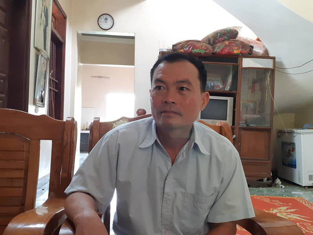

Trả lời PV Dân trí, ông Phùng Quý Mão - Chủ tịch UBND xã Kim Thượng (Tân Sơn, Phú Thọ) - cho biết, trước thông tin nhiều người dân của xã bị lây nhiễm HIV, xã chưa hề nhận được thông báo hay phản ánh nào từ người dân. "Chưa thể khẳng định được là có hay không nhiều người dân bị nhiễm HIV" - Ông Mão nói.
- Phóng viên: Dư luận đang rất quan tâm đến thông tin nhiều người dân trên địa bàn xã Kim Thượng bị lây nhiễm HIV. Ông nhìn nhận về sự việc này như thế nào?
- Ông Phùng Quý Mão: Thực sự chúng tôi rất bất ngờ trước những thông tin mà báo chí đăng tải, thông tin để cảnh báo hay thông báo có người bị nhiễm HIV từ cấp trên cũng chưa nhận được nên chưa thể khẳng định được là có hay không nhiều người dân bị nhiễm HIV.
Vừa mới cách đây mấy hôm, có một số phóng viên báo đài đến hỏi về vấn đề này thì tôi cũng chỉ biết dẫn họ đi chứ chúng tôi cũng chưa nắm được thông tin.
- Có thông tin cho rằng, hàng chục người dân trong xã đang chờ kết quả xét nghiệm HIV. Những người này nghi lây lan HIV do dùng chung kim tiêm khi cùng đến chữa bệnh tại nhà ông Th. tại xã, liệu có đúng không, thưa ông?
- Thực tế, vị bác sĩ Th. này là cán bộ của Trung tâm y tế huyện Tân Sơn, sáng đi chiều về, việc khám chữa bệnh cho người dân chắc là tranh thủ thời gian. Về việc vị bác sĩ này có quyền khám chữa bệnh cho người dân tại xã hay không thì chúng tôi không dám hỏi gì đến vì đây là cán bộ cấp huyện, mà cũng không không phải chuyên môn của chúng tôi.
Tại xã vừa rồi cũng có trường hợp một cháu bé bị tử vong, nhiều người cũng đồn đoán là do bị nhiễm HIV nhưng theo tôi là không phải vì khi đi xét nghiệm cả bố và mẹ cháu bé đều âm tính với căn bệnh thế kỷ này.
- Vậy trước đó, tại xã đã có trường hợp nào bị nhiễm HIV chưa, thưa ông?
- Về vấn đề này thì chúng tôi không nắm được vì không thuộc chuyên môn.
- Trước những thông tin gây hoang mang dư luận hoặc nếu có chính xác nhiều người dân bị nhiễm HIV, gây ảnh hưởng trực tiếp đến tâm lý người dân tại địa phương như vậy, chính quyền xã đã có những giải pháp gì?
- Hiện tại, lãnh đạo xã và người dân đang rất hoang mang trước những thông tin này. Ngay trong ngày hôm nay chúng tôi đã họp giao ban gấp, đồng thời sẽ phân công cán bộ đến khu Chiềng để trấn an người dân.